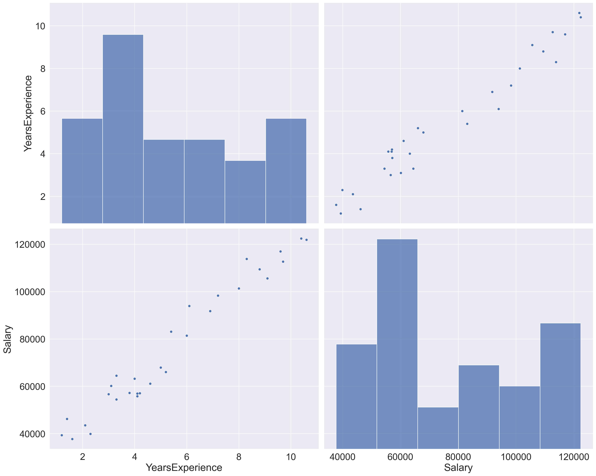
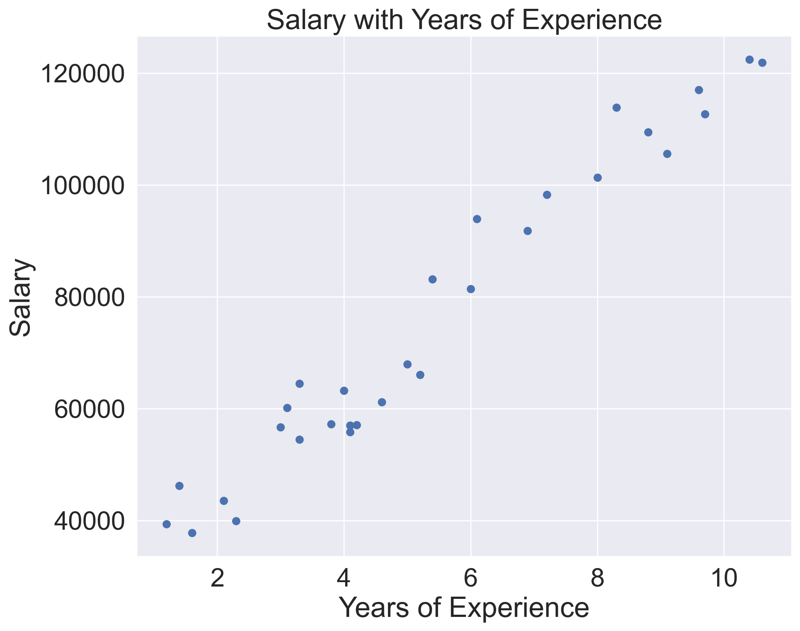
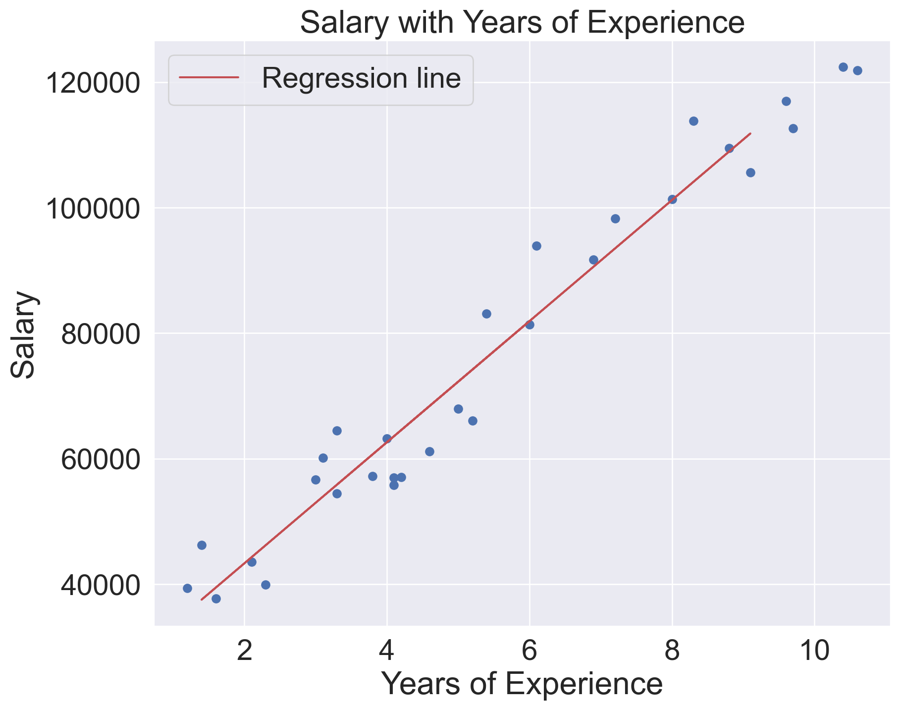

import numpy as np
import pandas as pd
import matplotlib.pyplot as plt
import seaborn as sns
from sklearn.linear_model import LinearRegression
from sklearn.model_selection import train_test_split
from sklearn.metrics import mean_absolute_error,mean_squared_error,r2_scoreLinear Regression
code
analysis
Salary Patterns with Linear Regression
Introduction In this blog post, we’ll look into a salary dataset and employ linear regression to understand the relationship between years of experience and salary. Linear regression in machine learning is a supervised learning algorithm used for predicting a continuous outcome variable based on one or more input features. It establishes a linear relationship between the input features and the target variable by finding the best-fitting line through the data points.
Exploring the Dataset Our dataset contains 30 entries of our two variables, Years of experience and Salary. Let’s load the dataset.
df=pd.read_csv('Salary_dataset.csv')
df.head()| Unnamed: 0 | YearsExperience | Salary | |
|---|---|---|---|
| 0 | 0 | 1.2 | 39344.0 |
| 1 | 1 | 1.4 | 46206.0 |
| 2 | 2 | 1.6 | 37732.0 |
| 3 | 3 | 2.1 | 43526.0 |
| 4 | 4 | 2.3 | 39892.0 |
df.shape(30, 3)df.info()<class 'pandas.core.frame.DataFrame'>
RangeIndex: 30 entries, 0 to 29
Data columns (total 3 columns):
# Column Non-Null Count Dtype
--- ------ -------------- -----
0 Unnamed: 0 30 non-null int64
1 YearsExperience 30 non-null float64
2 Salary 30 non-null float64
dtypes: float64(2), int64(1)
memory usage: 852.0 bytesWe’ll clean our data by dropping unnecessary columns and checking for missing or duplicated values.
df.drop('Unnamed: 0',axis=1,inplace=True)# Check for Null values
df.isna().sum()YearsExperience 0
Salary 0
dtype: int64# Check for Duplicated values
df.duplicated().sum()0df.corr()| YearsExperience | Salary | |
|---|---|---|
| YearsExperience | 1.000000 | 0.978242 |
| Salary | 0.978242 | 1.000000 |
EDA
To gain insights into the dataset, we’ll compute correlations and create visualizations, such as pair plots and scatter plots.
sns.set(font_scale=2)
sns.pairplot(df, height=8, aspect=10/8)
x=df['YearsExperience']
y=df['Salary']plt.rcParams["figure.figsize"] = (10, 8)
plt.scatter(x, y)
plt.xlabel("Years of Experience")
plt.ylabel("Salary")
plt.title("Salary with Years of Experience")
plt.grid(True)
plt.show()
x = np.array(x).reshape(-1, 1)
y = np.array(y).reshape(-1, 1)
Train Test Split
x_train,x_test,y_train,y_test=train_test_split(x,y,test_size=0.15)Linear Regression Model
lr=LinearRegression()
lr.fit(x_train,y_train)LinearRegression()In a Jupyter environment, please rerun this cell to show the HTML representation or trust the notebook.
On GitHub, the HTML representation is unable to render, please try loading this page with nbviewer.org.
LinearRegression()
Predictions of our Model
y_preds=lr.predict(x_test)
print(y_preds)[[ 36623.78038843]
[ 46884.22864594]
[114976.29435486]
[ 75800.03737164]
[ 40354.85248207]]plt.rcParams["figure.figsize"] = (10, 8)
plt.scatter(x, y)
plt.xlabel("Years of Experience")
plt.ylabel("Salary")
plt.plot(x_test, y_preds, color = "r", label = "Regression line")
plt.title("Salary with Years of Experience")
plt.grid(True)
plt.legend()
plt.show()
Model Evaluation
print("Mean Absolute Error = ", str(mean_absolute_error(y_test, y_preds)))
print("Mean Squared Error = ", str(mean_squared_error(y_test, y_preds)))
print("R-squared = ", str(r2_score(y_test, y_preds)))Mean Absolute Error = 4323.593802615241
Mean Squared Error = 24054809.94239825
R-squared = 0.9761718666101641Conclusion
In conclusion, our exploration into the salary dataset using linear regression has provided valuable insights into the relationship between years of experience and salary.